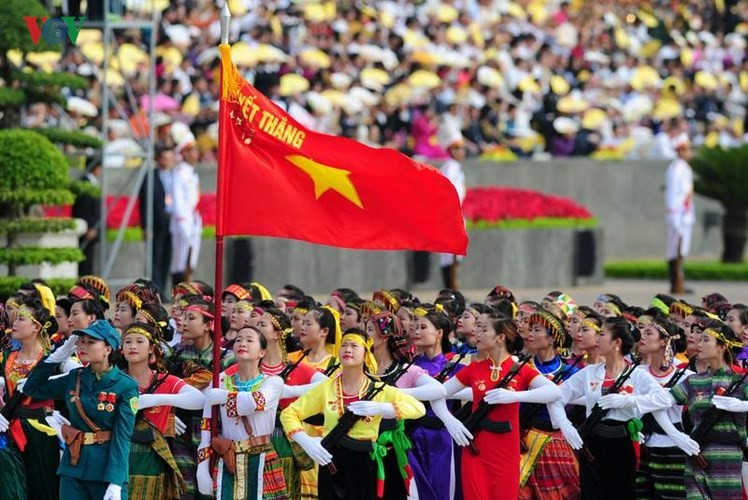
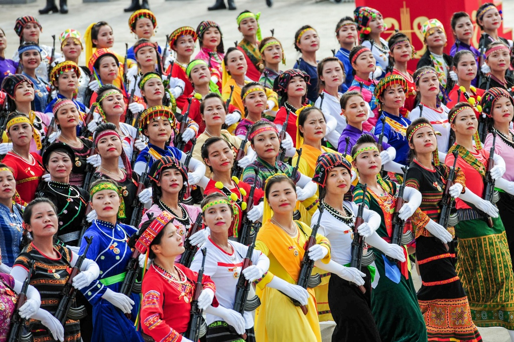
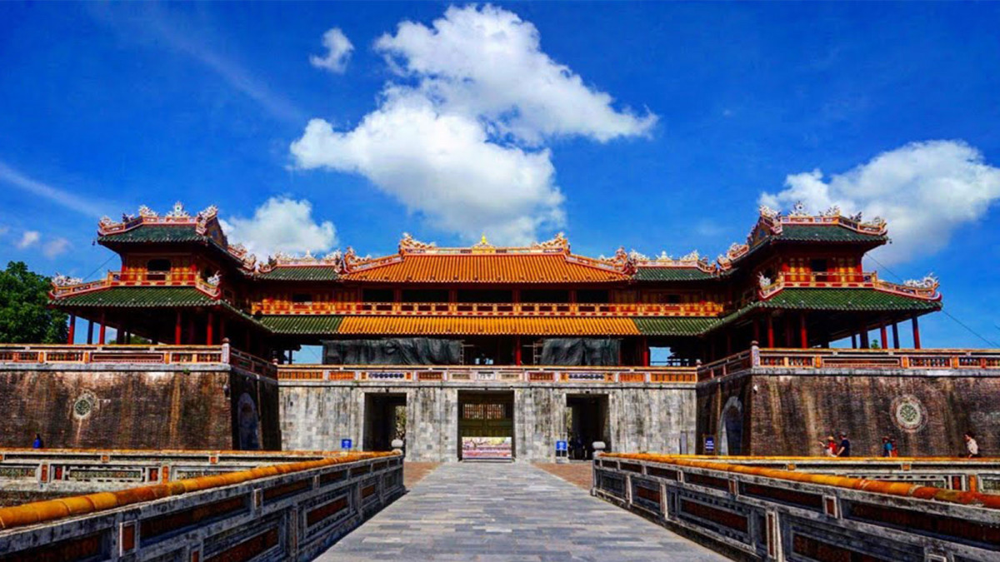
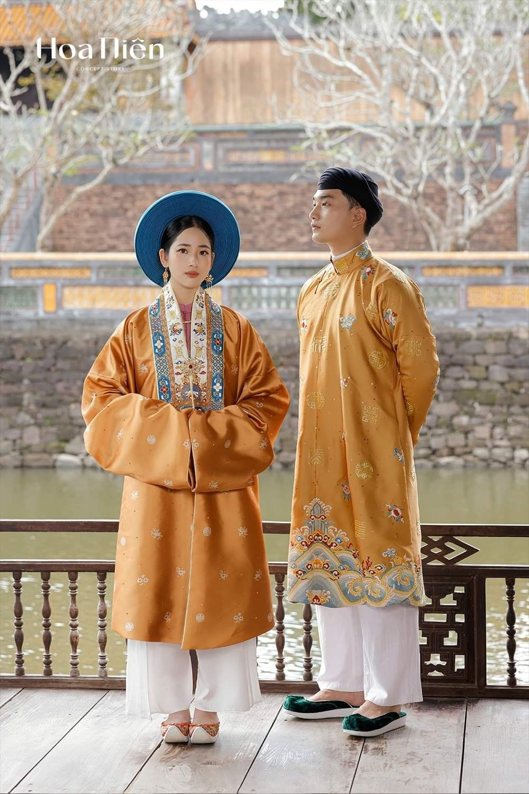
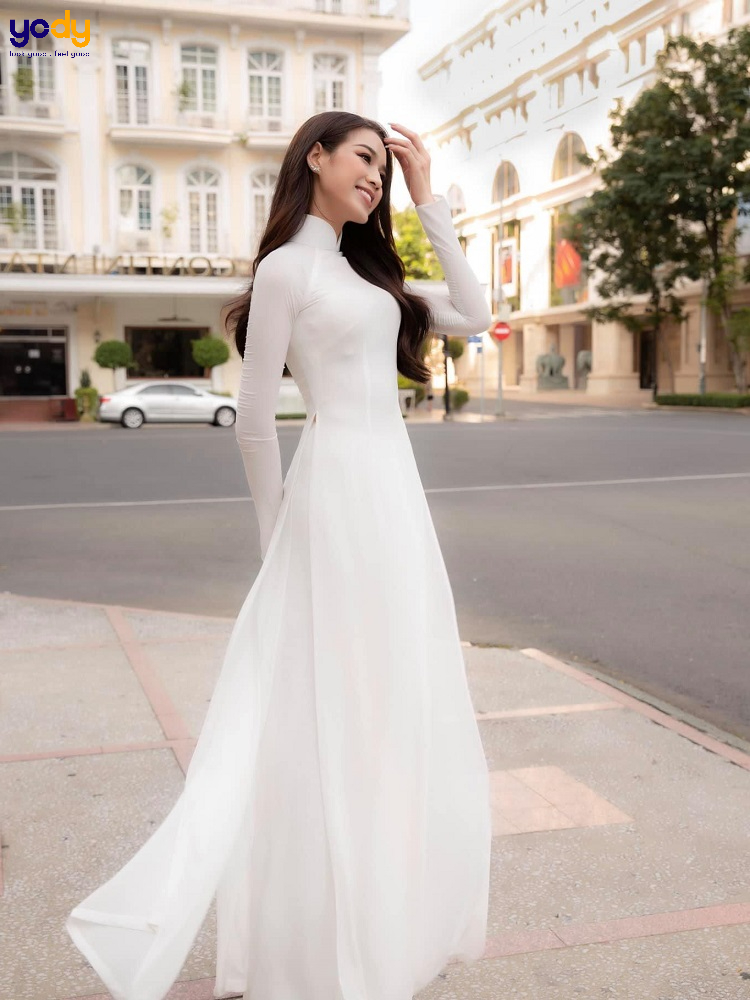
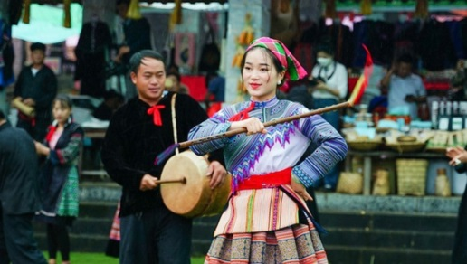
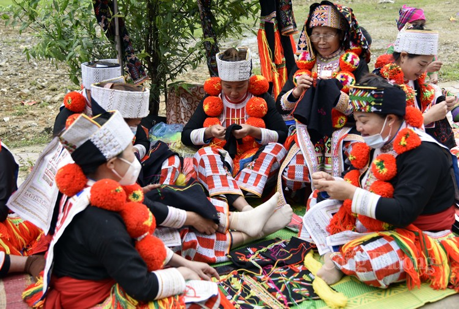
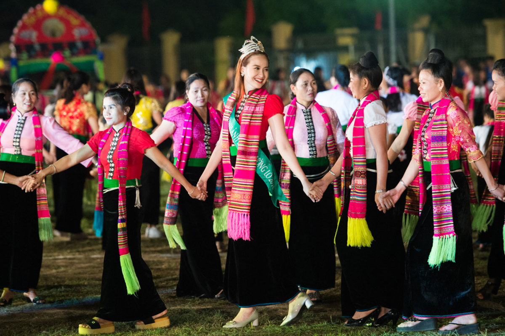

Chuyên nghiên cứu và lưu trữ trang phục truyền thống, nghệ thuật thêu tay, dệt thủ công và bản sắc văn hóa dân tộc Việt Nam.
📍 Hà Nội · Sa Pa · Tây Nguyên · Đồng bằng sông Cửu Long
Việt Nam là quốc gia đa dân tộc với 54 cộng đồng anh em, mỗi dân tộc đều sở hữu trang phục truyền thống, họa tiết và kỹ thuật thủ công mang bản sắc riêng biệt. Dự án này được xây dựng nhằm số hóa và bảo tồn các giá trị văn hóa truyền thống, đồng thời quảng bá nghệ thuật dân gian Việt Nam đến cộng đồng quốc tế.

Dân tộc được lưu trữ

Trang phục truyền thống

Hình ảnh văn hóa

Áo dài là biểu tượng văn hóa đặc trưng của Việt Nam, nổi bật với thiết kế ôm dáng thanh lịch và chất liệu lụa mềm mại, thể hiện vẻ đẹp truyền thống kết hợp hiện đại.
Lụa truyền thống Thêu tay Biểu tượng quốc gia
Người H'Mông nổi tiếng với nghệ thuật vẽ sáp ong, nhuộm chàm và thêu hoa văn hình học đầy màu sắc, phản ánh tín ngưỡng và đời sống văn hóa vùng cao.
Batik thủ công Nhuộm chàm Họa tiết dân gian
Trang phục Dao Đỏ nổi bật với khăn đội đầu màu đỏ, họa tiết thêu tinh xảo và các chi tiết thủ công cầu kỳ, mang đậm dấu ấn tín ngưỡng dân gian.
Thêu đỏ truyền thống Văn hóa nghi lễ
Trang phục phụ nữ Thái mang vẻ đẹp tinh tế, kết hợp giữa váy đen dài và áo cóm ôm sát, thể hiện sự khéo léo trong nghệ thuật dệt truyền thống.
Dệt thủ công Thẩm mỹ dân tộcTrang phục dân tộc không chỉ là quần áo truyền thống, mà còn là biểu tượng của lịch sử, bản sắc cộng đồng và niềm tin tâm linh. Dự án hướng đến việc bảo tồn lâu dài các giá trị văn hóa Việt Nam, đồng thời truyền cảm hứng cho thế hệ trẻ tiếp nối và phát huy di sản dân tộc.